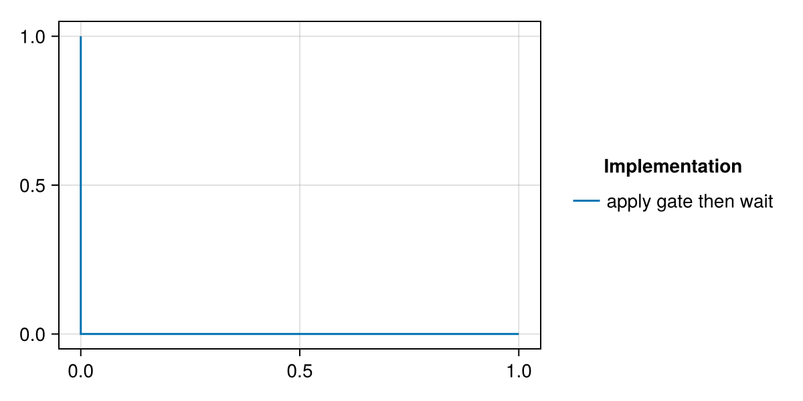
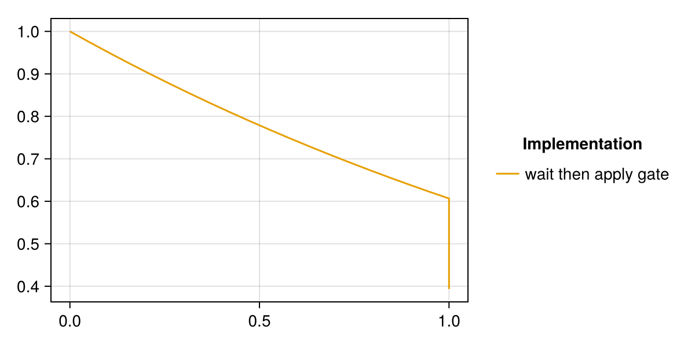
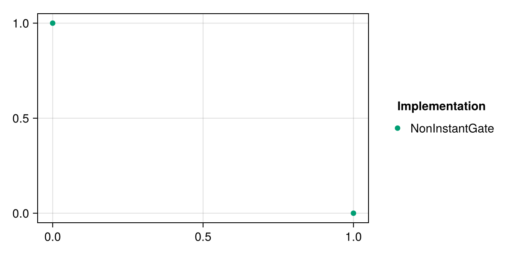
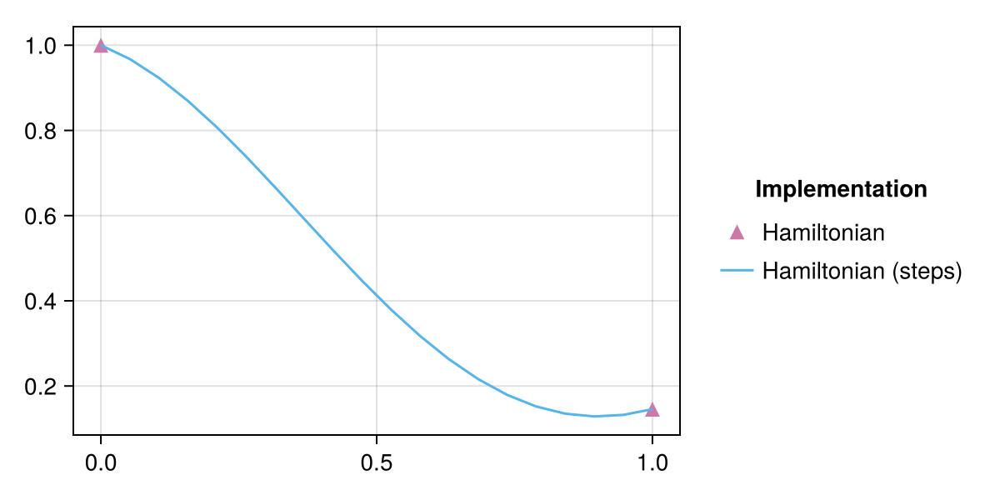
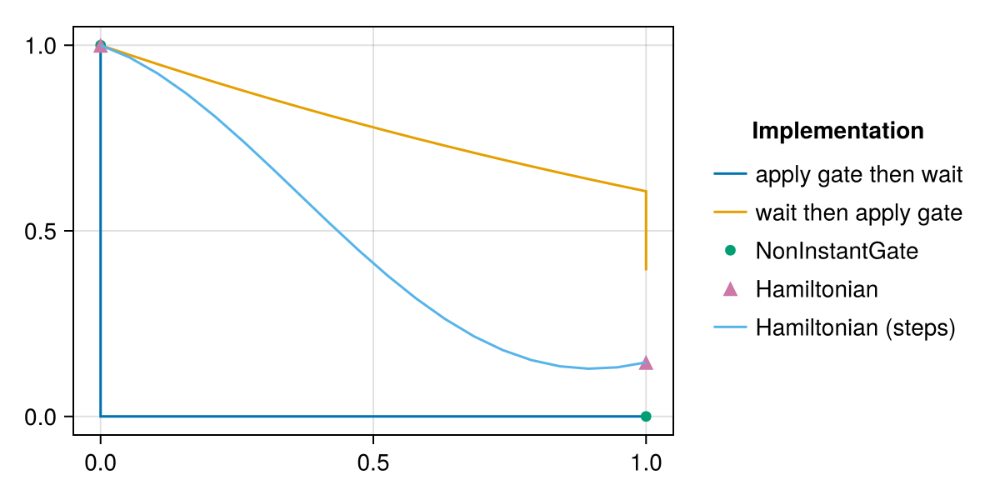

Gate duration, i.e. gates that are not instant
There are a number of different ways to represent a gate that is not instantaneous in QuantumSavory. They are not necessarily equivalent. Here we show a couple of typical approaches.
We start with a quick initial setup of a register with two qubits and an observable pop representing the population in the excited state in the Z basis. The gate duration will be set to 1.0 (as given in ts) and the qubits will have decay time T1 = 2.0 so that we can more clearly demonstrate effects due to the non-instant nature of the gate.
using QuantumSavoryusing CairoMakieT1 = 2.0reg = Register([Qubit(), Qubit()], [nothing, T1Decay(T1)])initialize!(reg[1], Z₂)initialize!(reg[2], Z₂)pop = SProjector(Z₂)initial_pop = observable(reg[2], pop)STEPS = 20ts = range(0,1,length=STEPS)0.0:0.05263157894736842:1.0Approach 1: Apply an instantaneous gate and then simply wait
A rather manual and simple approach. We will plot the value of the population observable over the entire waiting period.
reg_gate_wait = deepcopy(reg) # copy the registerapply!([reg_gate_wait[1],reg_gate_wait[2]], CNOT)pop_gate_wait = [observable(reg_gate_wait[2], pop; time) for time in ts]
Given that the gate flips from the initial excited state to the ground state, the T1 decay does not have any effect.
Approach 2: Wait and then apply an instantaneous gate
reg_wait_gate = deepcopy(reg)pop_wait_gate = [observable(reg_wait_gate[2], pop; time) for time in ts]apply!([reg_wait_gate[1],reg_wait_gate[2]], CNOT)final_pop_wait_gate = observable(reg_wait_gate[2], pop)
There has been significant decay before the gate is applied, which leads to only partially flipping the state (which is also mixed).
Approach 3: The NonInstantGate
using QuantumSavory: NonInstantGatereg_slow_cnot = deepcopy(reg)gate = NonInstantGate(CNOT, 1.0)apply!([reg_slow_cnot[1],reg_slow_cnot[2]], CNOT)final_pop_slow_cnot = observable(reg_slow_cnot[2], pop)
NonInstantGate is convenient way to store a "gate duration" together with an arbitrary gate. As it does not permit sampling while the gate is being performed, we have only initial and final state. Internally, this is implemented by applying the gate instantaneously and then waiting.
Approach 4: Continuous application of a Hamiltonian
The approximation of a gate+waiting above might be inappropriate for real systems (or at least it might be difficult to calibrate). Instead, one can simply provide the Hamiltonian that implements a give gate and QuantumSavory will automatically solve the corresponding dynamical equation.
Below we do it in two different ways: A single evolution for duration 1.0 (which does not permit sampling of the state in intermediary times):
reg_slow_ham = deepcopy(reg)ham_gate = ConstantHamiltonianEvolution(pi/2*SProjector(Z₂)⊗σˣ,1.0)apply!([reg_slow_ham[1],reg_slow_ham[2]], ham_gate)final_pop_slow_ham = observable(reg_slow_ham[2], pop)0.14563651020857932 + 0.0im... and the same but performed in multiple separate steps in order to be able to plot the intermediary results:
reg_slow_ham_steps = deepcopy(reg)ham_gate_step = ConstantHamiltonianEvolution(pi/2*SProjector(Z₂)⊗σˣ, ts[2])pop_slow_ham_steps = [ begin apply!([reg_slow_ham_steps[1], reg_slow_ham_steps[2]], ham_gate_step) observable(reg_slow_ham_steps[2], pop) end for _ in 2:STEPS]
Summary and comparison of all results
Below we plot the results of each approach. As you can see, they are physically different and it might be important to calibrate them carefully to the situation at hand.
all_pop_gate_wait = real.([initial_pop, pop_gate_wait...])all_pop_wait_gate = real.([initial_pop, pop_wait_gate..., final_pop_wait_gate])all_pop_slow_ham_steps = real.([initial_pop, pop_slow_ham_steps...])fig = Figure(size=(600,300))axis = Axis(fig[1,1])lines!([0,ts...], all_pop_gate_wait, color=Cycled(1), label="apply gate then wait")lines!([0,ts...,ts[end]], all_pop_wait_gate, color=Cycled(2), label="wait then apply gate")scatter!([0,ts[end]], real.([initial_pop, final_pop_slow_cnot]), color=Cycled(3), label="NonInstantGate")scatter!([0,ts[end]], real.([initial_pop, final_pop_slow_ham]), color=Cycled(4), label="Hamiltonian", marker='▴', markersize=18)lines!(ts, all_pop_slow_ham_steps, color=Cycled(5), label="Hamiltonian (steps)")fig[1, 2] = Legend(fig, axis, "Implementation", framevisible = false)fig